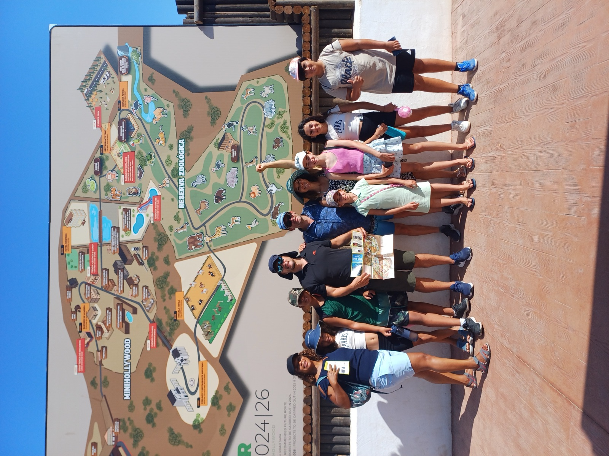

Youth Life Skills & Leadership
Inquire about our 4-stage formation pathway (Seedling, Explorer, Builder, Launch) for students ages 10 to 18.
We'd Be Honored to Connect
Whether you represent a church, a family seeking scholarship or homeschool support, a student seeking Life Skills mentorship, or an adult learner, our team is here to serve you.
Inquiry Pathways
Select an area of interest or postulation below to connect directly with our educational and administrative team.
Inquire about our 4-stage formation pathway (Seedling, Explorer, Builder, Launch) for students ages 10 to 18.
Register for community parenting seminars, digital literacy, ESL language courses, and adult vocational workshops.
Apply for need- and merit-based scholarship aid to earn the accredited US High School Diploma alongside local schooling.
Connect with church-based learning pods, curriculum advice, and pedagogical consultation in Spain and Latin America.
Request a 100% free adaptive evaluation and personalized learning roadmap for your child.
Explore launching a hub in your local church or supporting active educational initiatives through philanthropic gifts.
Send a Message
Join our mission to empower students, equip adults, and strengthen families. Fill out the details below and our team will get in touch promptly.

Partnership Confidence
We value clear communication and mission integrity. Every inquiry is handled with the goal of building relationships that are practical, transparent, and focused on meaningful outcomes for children, youth, and families.
From initial orientation to ongoing educational support, Chanak Foundation works to ensure partner alignment, administrative clarity, and faithful stewardship of every opportunity entrusted to us.
Local Collaboration
Chanak Foundation works alongside local partners such as EducaFe to support values-based educational initiatives, family strengthening, and community-rooted care for children and youth.